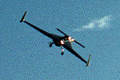
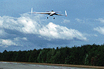
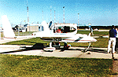
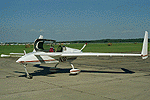
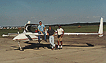

P.I.(s): Timothy L. Crawford -- NOAA Atmospheric Turbulence and Diffusion Division (ATDD)
Co-I(s): Dennis Badocchi, Robert McMillen, and Ronald Dobosy -- NOAA ATDD
Objectives: To do airborne flux measurements and modeling of air-surface exchange rates of water vapor, sensible heat, and CO2 over the boreal forest, and study the abiotic and biotic factors that control the fluxes of scalars in this landscape. The aircraft used to collect the data was the NOAA Long-EZ.
|  The NOAA Long-EZ in flight |  The NOAA Long-EZ landing |
|  The NOAA Long-EZ on the ground |  The NOAA Long-EZ on the ground |
|  The NOAA Long-EZ on the ground with [l-r] Tim Crawford, Ed Dumas, and Hollie Wilson | |
For more information on the AFM-1 data, check out the NOAA Atmospheric Turbulence and Diffusion Division (ATDD) site.
Objectives:
The primary objective was to measure the spatial structure of sensible and latent heat, CO2, and momentum to allow for extrapolating surface-based measurements to regional scales. The Long-EZ (FL) flew 270 hours during the spring, summer and fall IFC's. Current analyses are focused on comparison of measurements with those from other aircraft and flux towers, improvement in data reduction algorithms, and exploration of the variance of spatial exchange. An ultimate objective is to develop algorithms to relate boundary-layer processes to satellite-derived data.
Type of Data/Instrumentation:
Airborne measurements were made of the three-component turbulent wind velocity, temperature, humidity, and carbon dioxide, along with incident and reflected PAR, net radiation, and surface temperature. Eddy flux data were recorded at 40 Hz. The BOREAS data base contains a complete description of the Long-EZ and its instrument systems, and describes the data reduction process and appropriate data use. The data consist of 3-km horizontal averages of state variables, along with turbulent fluxes and radiometric data. High frequency data are available on request from NOAA/ATDD for specific studies.
Place and Times of Measurements:
All Long-EZ flights occurred in the southern study area. The 115 km Candle Lake transect was the focus of many missions. Site-specific missions focused on the Old Jack Pine (OJP), Old Aspen (OA), or the Black Spruce (BS) sites. Additional Grid or "L" patterns were flown. The 1994 flight summary is given by the below table. The BOREAS data base contains a complete description of all flights.
| ITEM | IFC-1 | IFC-2 | IFC-3 | TOTAL |
|---|---|---|---|---|
| Flight Hours | 83 | 75 | 68 | 226 |
| SSA-OJP Passes | 98 | 33 | 71 | 202 |
| SSA-OA Passes | 44 | 47 | 23 | 114 |
| BS Passes | 37 | - | 32 | 69 |
| Candle Lake | 35 | 55 | 32 | 122 |
| Grid Pattern | - | 5 | 3 | 8 |
| "L" Pattern | 6 | 14 | - | 20 |
| Calibrations | 28 | 5 | 2 | 35 |
| Intercomparisons | 18 | 8 | 2 | 28 |
Known Problems and Caveats:
The vertical-wind-velocity variance determined from the Long-EZ was elevated compared to that from the other flux airplanes. In intercomparison with towers the fluxes appear to be only marginally affected, the extra fluctuations in vertical wind being generally uncorrelated with fluctuations in temperature, moisture and other quantities. We have installed fast-response GPS receivers for future work to minimize this apparently spurious variance. Other problems are episodic and are reported in the BOREAS data base.
AFM Overview || AFM-1 | AFM-2 | AFM-3 | AFM-4 | AFM-5 | AFM-6
AFM-7 | AFM-8 | AFM-9 | AFM-11 | AFM-12 | AFM-13 | AFM-14 | AFM-15
 Send a data request to the BOREAS Data Manager (BOREAS Investigators only)
Send a data request to the BOREAS Data Manager (BOREAS Investigators only)
E-Mail a comment on this page to the curator 
Send e-mail to Keith Kaminsky, the BORIS representative for the AFM group
Return to the AFM Overview
Return to the BOREAS Science Groups Overview
Return to the BOREAS Home Page
Last Updated: July 14, 1998
{kind=link}
{kind=link}
{kind=link}
{kind=link}